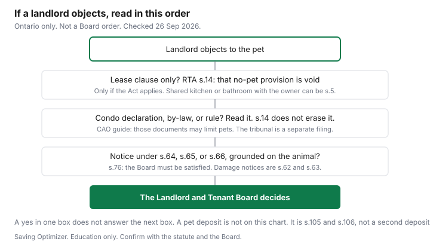

Pets · Canada
Renting With Pets in Ontario: Why 'No Pets' Lease Clauses Are Void, and the Exceptions That Matter
A line in a lease that says “no pets” is not the same document as a condominium declaration, and neither one is a pet deposit. Ontario’s Residential Tenancies Act, 2006, makes one of those three things void. It leaves the other two as separate questions. This page walks the statute text opened on 26 Sep 2026, and the Condominium Authority of Ontario’s Condo Tenants’ Guide (PDF file dated 11 Apr 2024 in the address). It is education. It is not legal advice, not a ruling, and not a promise about your unit. If you are unsure whether the Act applies, the Landlord and Tenant Board is the office the CAO guide names.
Disclosure: There is no affiliate offer on this page. Saving Optimizer does not claim a partnership with a landlord, a condo corporation, a shelter, or a lawyer. Education only. Confirm the section, and whether it covers your unit, with the statute and the Landlord and Tenant Board.
Key takeaways
- RTA section 14: a provision in a tenancy agreement prohibiting the presence of animals in or about the residential complex is void. That sentence is about the tenancy agreement. It is not a sentence about every condo rule.
- Section 5 lists occupancies the Act does not cover, including accommodation where the occupant must share a bathroom or kitchen with the owner or the owner’s listed family, and the owner lives in the building. A void clause does not help a tenancy the Act does not cover.
- The CAO tenant guide says condo governing documents may prohibit pets, limit type, number, weight, or location, and require a leash on common elements. It also says a breach can lead to the Landlord and Tenant Board, and that the unit owner or the corporation may file at the Condominium Authority Tribunal on pet issues.
- Section 105: the only security deposit a landlord may collect is a rent deposit under section 106, capped at the lesser of one rent period and one month. Section 134, unless otherwise prescribed, bars a key deposit or other like amount. The CAO guide’s own answers allow a refundable key or fob deposit up to expected replacement cost, and say a damage deposit is not allowed. A pet deposit is not the rent deposit.
- British Columbia’s pet damage deposit, and Québec’s rule on exacting a deposit, are other guides. This page does not restate their dollar caps.
RTA s.14: no-pet clauses are void
Section 14 is one sentence. “A provision in a tenancy agreement prohibiting the presence of animals in or about the residential complex is void.” The heading in the Act is “No pet” provisions void. The words that do the work are “in a tenancy agreement.” A clause in the lease, or in an oral or implied agreement that is the tenancy agreement, that bans animals in or about the complex does not have force as that clause. The rest of the lease does not disappear because one line is void. Section 4 of the same Act, as the table of contents frames it, voids a provision inconsistent with the Act. Section 14 is the specific pet line.
Read the exemptions before you treat the sentence as universal. Section 5 says the Act does not apply to a list of living accommodations. The one renters meet most often in a house is clause (i): accommodation whose occupant must share a bathroom or kitchen facility with the owner, the owner’s spouse, child, or parent, or the spouse’s child or parent, where that owner or family member lives in the building. Clause (a) covers hotels, motels, and other places intended for the travelling public or occupied for a seasonal or temporary period. Clause (j) covers business premises with living accommodation under a single lease. The CAO guide shortens the shared-kitchen point and adds that the Act does not apply to commercial leases. If your situation is on the section 5 list, section 14 is not your clause. The Board can be asked, under the Act’s own application route, whether the Act applies. This page does not decide that for you.
A landlord can still choose a tenant at the start, within the limits of the Human Rights Code. The CAO guide, section 2.1, says a landlord may ask for current residence, rental history, references, and income information, and it points to Regulation 290/98 on how income information may be requested. The same paragraph says that regulation does not authorize a refusal based on a ground the Code protects. “I will not rent to you because the lease says no pets” is a different sentence from “this condominium’s declaration does not allow this animal.” The first sentence is the void clause, if the Act applies. The second is the next section. Do not pay a fee to make the void clause “go away.” Fees are the deposit section below, and the Ontario tenant-fees guide is the money list.
Condo declarations that bind tenants
The CAO Condo Tenants’ Guide, opened 26 Sep 2026, states the split in its pet answer: under the RTA, any “no pets” provision in a tenancy agreement is void. A condominium corporation’s governing documents may still restrict or prohibit pets. The examples on that page are a ban on any pets, a limit on type or species, a limit on number, a weight or size limit (the guide’s example is dogs under 40 pounds), a limit on where the animal may be kept, including a balcony or other common elements, and a requirement to leash or otherwise control the animal on common elements. Those are examples of what governing documents may contain. They are not a rule of your building until you read your building’s documents.
The guide’s earlier chapter says the difference between renting a condo unit and renting other property is that residents, including tenants, must comply with the Condominium Act and with the declaration, by-laws, and rules. It lists pets among the subjects those documents can restrict. It also says a breach can mean the landlord serves a notice or files at the Landlord and Tenant Board, which can include eviction, and that the condominium corporation or another unit owner may file at the Condominium Authority Tribunal. Section 1.4 of the same guide says corporations and owners can file against a unit owner and/or a tenant for a contravention of the governing documents on pets, parking and storage, vehicles, and related indemnification. It says that, as of 1 January 2022, they can also file over a nuisance, annoyance, or disruption relating to light, noise, odour, smoke and vapour, vibration, or another nuisance established in the governing documents. The guide notes that the tribunal’s list can change. A tenant who receives a tribunal notice is in a different process from a lease argument about section 14.
Ask for the declaration, the by-laws, and the rules before you agree to the unit. The guide’s move-in list says the landlord should give you the keys or fobs, a copy of the tenancy agreement, and a copy of the governing documents. A verbal “pets are fine” from a listing is not that copy. Service animals are a separate sentence in the same pet answer: the guide says service animals are not pets, and that the right to a service animal is protected under the Human Rights Code, with accommodation to the point of undue hardship. That is the guide’s statement, and it points readers to the Ontario Human Rights Commission. It is not a finding about a particular animal. Municipal bylaws on prohibited animals were not opened for this draft, so this page does not add a city dog-ban list on top of the condo documents.
Eviction grounds: damage, allergies, dangerous animals
Section 76 is the animal section, and it does not say the Board evicts because a pet exists. It says that if an application based on a notice under section 64, 65, or 66 is grounded on the presence, control, or behaviour of an animal, the Board shall not terminate the tenancy and evict unless it is satisfied that the tenant is keeping an animal and that one of three things is true. Clause (a), subject to subsection (2): the past behaviour of an animal of that species has substantially interfered with the reasonable enjoyment of the residential complex for all usual purposes by the landlord or other tenants. Clause (b), subject to subsection (3): the presence of an animal of that species has caused the landlord or another tenant to suffer a serious allergic reaction. Clause (c): the presence of an animal of that species or breed is inherently dangerous to the safety of the landlord or the other tenants.
Subsections (2) and (3) are the brakes. The Board shall not terminate on clause (a) if it is satisfied that the animal kept by the tenant did not cause or contribute to the substantial interference. It shall not terminate on clause (b) if it is satisfied that the animal kept by the tenant did not cause or contribute to the allergic reaction. A neighbour’s story about a different dog, or an allergy that this animal did not cause or contribute to, is the fact those subsections tell the Board to test. This page cannot apply that test. The Board does.
The notices section 76 names are not the damage notices. Section 64 is termination for substantial interference with reasonable enjoyment, or with another lawful right, privilege, or interest. The notice sets a termination date not earlier than the 20th day after it is given, and it requires the tenant, within seven days, to stop the conduct. The notice is void if the tenant stops within those seven days. Section 65 is the smaller building: a landlord who lives in a building of not more than three residential units may give a notice with a termination date not earlier than the 10th day, and subsections 64(2) and (3) do not apply to that notice. Section 66 is an act or omission in the complex that seriously impairs safety, with a termination date not earlier than the 10th day. Damage is section 62: wilful or negligent undue damage, a termination date not earlier than the 20th day, and a seven-day chance to repair, pay reasonable repair costs, or replace. That notice is void if the tenant complies or makes arrangements satisfactory to the landlord. Section 63 is the shorter damage notice, not earlier than the 10th day, for wilful undue damage or for use that causes or can reasonably be expected to cause significantly greater damage, and the seven-day cure in section 62 does not apply to it. A chewed door is a damage question under those sections. It is not, on the face of section 76, the same application as an allergy case. The tenant-rights guide is the wider money and process map. It does not replace a notice you have in your hand.
Pet deposits are not allowed in Ontario (verify)
Section 105(1) says the only security deposit a landlord may collect is a rent deposit collected in accordance with section 106. Section 105(2) defines a security deposit as money, property, or a right given to be held as security for an obligation or a liability, or to be returned when a condition happens. A sum labelled “pet deposit,” held in case the animal causes damage, matches that definition more closely than it matches rent. It is not converted into a lawful deposit by the label.
Section 106 is the rent deposit that is allowed. The landlord may require it if the requirement is made on or before entering the tenancy agreement. The amount shall not be more than the lesser of the rent for one rent period and the rent for one month. It is applied to the rent for the last rent period before the tenancy terminates. Interest is owed annually at the guideline rate in effect when the payment comes due. A new landlord generally cannot demand a fresh rent deposit if one was already paid to the prior landlord, with a mortgagee-sale exception in subsection (5). None of those sentences is a second deposit for a dog.
Section 134(1) says that, unless otherwise prescribed, no landlord shall collect or require a fee, premium, commission, bonus, penalty, key deposit, or other like amount, whether or not it is refundable. The regulation that prescribes the key exception was not returned as statute text on this build, so this page does not invent a dollar figure for keys. What was opened is the CAO guide’s own Q&A. Section 2.3 says a landlord can ask for a key deposit only if it is refundable and the amount is not more than the expected cost of replacing the keys, and the same limit is described for electronic badges or fobs, returned when the keys and fobs come back. Section 2.4 says a landlord cannot collect a damage deposit. If the landlord believes there is damage, the guide says the route is a notice and, if needed, an application to the Board, and that the last month’s rent deposit cannot be used for damage. Section 135 lets a tenant, former tenant, or prospective tenant apply for an order that money collected or retained in contravention of the Act be paid back. No order under that section shall be made on an application filed more than one year after the money was collected or retained. The tenant-fees cheat sheet is where the rent deposit and the key line sit beside other charges. Bring the statute, not a listing screenshot.
Other provinces compared (BC deposit post cross-linked)
Ontario’s section 14 and section 105 are Ontario’s. They do not travel. British Columbia’s pet damage deposit, including when it may be collected and how it is capped and returned, is explained in the B.C. security deposits guide. This page does not restate that cap, that form, or that return clock. If you are signing in B.C., use that guide and the Residential Tenancy Branch page it cites. Do not arrive with an Ontario “no pet clauses are void” sentence and assume the deposit line is void too.
Québec’s rule against exacting a security deposit is the subject of the Québec renters guide. This page does not restate that Civil Code article or the Tribunal administratif du logement path. A pet fee charged in Montréal is a question for that guide, not for section 105. Alberta, Saskatchewan, Manitoba, and the Atlantic provinces were not opened as pet-clause statutes on 26 Sep 2026, so no rule from those provinces is printed. The comparison this page can actually make is the one the three guides support: Ontario voids a no-pet clause in a tenancy agreement the Act covers, and it does not authorize a pet deposit as the security deposit. B.C. and Québec are different documents. Read the one for the province on the lease.
Tips for applications
Write three questions on the application, in this order. First: does the Residential Tenancies Act apply to this unit, or is it an exemption in section 5, including a shared kitchen or bathroom with the owner who lives there? Second: is this a condominium, and can you have the declaration, by-laws, and rules before you pay anything? Third: what money is being asked for, and which of it is the rent deposit under section 106? A pet deposit is the line you do not pay. The rental application package is how to send credit and history documents you control, without paying an application fee the other guides already flag.
If you are choosing the animal at the same time as the unit, the fee and the first-year care sheet are a different page, the adoption and breeder comparison. A shelter fee does not make a condo declaration disappear, and a void lease clause does not pay the veterinary sheet. Keep the housing file and the animal file separate. If a notice arrives, the dates in sections 62 to 66 are short. Seven days and ten days are in the statute. They are not a suggestion to wait for a blog. Contact the Landlord and Tenant Board with the notice in front of you.
| Situation | What the opened text says | Source |
|---|---|---|
| No-pet clause in the tenancy agreement | A provision prohibiting the presence of animals in or about the residential complex is void. The Act has to apply. Section 5 lists exemptions, including a shared bathroom or kitchen with the owner or listed family who live in the building. | RTA s.14 and s.5. CAO guide, section 2.7, states the same void-clause point. |
| Condo declaration, by-law, or rule bans or limits pets | Governing documents may prohibit pets or limit type, number, weight, place, or leash rules. A breach may go to the Landlord and Tenant Board. The corporation or another owner may file at the Condominium Authority Tribunal on pet provisions. | CAO Condo Tenants’ Guide, sections 1.4 and 2.7. Opened 26 Sep 2026. |
| Damage | Undue damage can support a notice under s.62 (not earlier than 20 days, with a seven-day repair or pay step that voids the notice if met) or s.63 (not earlier than 10 days, without that seven-day step). Section 76’s opening words name notices under s.64, s.65, or s.66, not s.62. | RTA s.62, s.63, and s.76(1). |
| Allergies | On an application grounded on the animal, the Board must be satisfied the tenant is keeping an animal and that an animal of that species caused a serious allergic reaction. It shall not terminate on that clause if this animal did not cause or contribute to the reaction. | RTA s.76(1)(b) and s.76(3). |
| Dangerous animal | The Board must be satisfied the tenant is keeping an animal and that the presence of an animal of that species or breed is inherently dangerous to the safety of the landlord or the other tenants. Past-behaviour interference is a separate clause, and it fails if this animal did not cause or contribute. | RTA s.76(1)(c), s.76(1)(a), and s.76(2). |
| Pet deposit request | The only security deposit is a rent deposit under s.106, not more than the lesser of one rent period and one month, applied to last rent. Unless otherwise prescribed, s.134 bars a key deposit or other like amount. The CAO guide allows a refundable key or fob deposit up to expected replacement cost and says a damage deposit is not allowed. No pet-deposit exception was in the text opened here. | RTA s.105, s.106, s.134, s.135. CAO guide sections 2.3 and 2.4. |

Sources & date stamps
- Residential Tenancies Act, 2006, S.O. 2006, c. 17, text opened 26 Sep 2026. Sections 5, 14, 62, 63, 64, 65, 66, 76, 105, 106, 134, and 135, as quoted above. ontario.ca/laws/statute/06r17 is the official address. The HTML shell required JavaScript, so the consolidated text was read from the statute body.
- Condominium Authority of Ontario, Condo Tenants’ Guide, PDF at condoauthorityontario.ca, file name dated 11 Apr 2024, opened 26 Sep 2026. Sections 1.4, 1.5, 2.1, 2.3, 2.4, and 2.7.
- B.C. pet damage deposit figures are not restated. They live on the B.C. security deposits guide. Québec’s deposit rule is not restated. It lives on the Québec renters guide. No pet-clause statute for Alberta, Saskatchewan, Manitoba, or Atlantic Canada was opened.
Frequently asked questions
Can my Ontario landlord ban pets in the lease?
Section 14 of the Residential Tenancies Act says a provision in a tenancy agreement prohibiting the presence of animals in or about the residential complex is void. The Act has to apply. Section 5 exempts some occupancies, including one where you share a bathroom or kitchen with the owner or listed family who live in the building. A condo declaration is a different document, and this is not legal advice.
Can a condo board ban my pet as a tenant?
The CAO Condo Tenants' Guide says a no-pet clause in the tenancy agreement is void, and that the corporation's declaration, by-laws, and rules may still prohibit pets or limit type, number, weight, place, or leash use. The guide says a breach can go to the Landlord and Tenant Board, and that the corporation or another owner may file at the Condominium Authority Tribunal on pet provisions. Service animals, the same page says, are not pets under the Human Rights Code. Read your building's documents before you treat this page as a ruling.
Can I be evicted because of my pet?
Section 76 says the Board shall not evict on an application grounded on an animal, based on a notice under section 64, 65, or 66, unless it is satisfied you are keeping an animal and that a listed ground is met: past behaviour of that species that substantially interfered, a serious allergic reaction, or a species or breed that is inherently dangerous. The interference and allergy clauses do not support termination if this animal did not cause or contribute. Damage notices are sections 62 and 63, which section 76's opening words do not name. Only the Board applies those tests.
Can an Ontario landlord charge a pet deposit?
Section 105 says the only security deposit is a rent deposit under section 106, capped at the lesser of one rent period and one month and applied to last rent. Section 134, unless otherwise prescribed, bars a key deposit or other like amount. The CAO guide allows a refundable key or fob deposit up to expected replacement cost and says a damage deposit is not allowed. No pet-deposit exception was in the text opened on 26 Sep 2026.
How are other provinces different?
British Columbia's pet damage deposit is explained in the British Columbia security deposits guide, and this page does not restate the cap. Quebec's rule against exacting a security deposit is the Quebec renters guide, and this page does not restate that article. Alberta, Saskatchewan, Manitoba, and the Atlantic provinces were not opened as pet-clause statutes on 26 Sep 2026. Use the statute for the province on the lease.